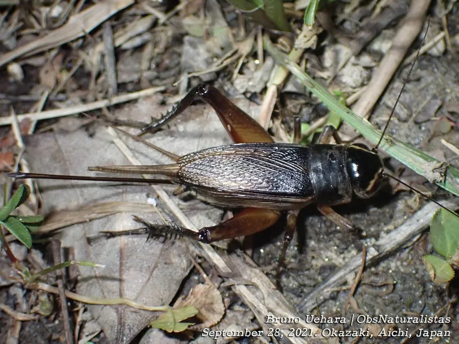

昆虫 · 动物界
黄脸油葫芦 Teleogryllus emma

头部黄褐、体黑褐的常见蟋蟀，雄虫鸣声洪亮悠长，栖于田野与庭院，是民间常见的鸣虫。
- 分类
- 门节肢动物门纲昆虫纲目直翅目科蟋蟀科属油葫芦属
- 栖息环境
- 田野、菜地、庭院墙角、砖石缝隙与草丛
- 地理分布
- 中国南北各地及日本、朝鲜半岛
- 保护级别
- 常见种，无保护需求
物种志
黄脸油葫芦的体长约二点五至三厘米，体黑褐至深褐色，头部黄褐色，脸部有明显的黄色斑纹，故名黄脸。前翅短，雄虫前翅上有发音镜，摩擦时发出悠长而有节奏的鸣声；雌虫腹末有细长的产卵管，像一根黑色的针。后足粗壮，善跳跃，尾须长而敏感，能察觉身后的动静。
它分布于中国南北各地以及日本、朝鲜半岛，栖息在田野、菜地、庭院墙角、砖石缝隙和草丛中，夜间活动，白天躲在缝隙里。雄虫在夏秋鸣叫求偶，鸣声洪亮，是夏夜常见的虫声之一。它食性杂，取食植物嫩叶、种子和腐殖质，偶尔啃食作物幼苗，一般危害不大。以卵在土中越冬，一年发生一代。它也是民间常见的鸣虫，被不少人饲养赏玩。
形态与习性
- 体长约二点五至三厘米，黑褐色
- 头部黄褐色，脸部有明显黄斑
- 鸣声雄虫摩擦前翅，声音洪亮悠长
- 产卵雌虫产卵管细长如针，插入土中
- 食性嫩叶、种子与腐殖质，偶食幼苗
- 越冬以卵在土中越冬，一年一代
趣味知识
- 它脸上一片黄，身体却黑得像抹了油，黄脸油葫芦的名字十分贴切。
- 雄虫把前翅竖起摩擦，鸣声能传出几十米，是老北京鸣虫摊上的常客。
- 雌虫尾部那根黑针是产卵管，专门用来把卵送进土里。